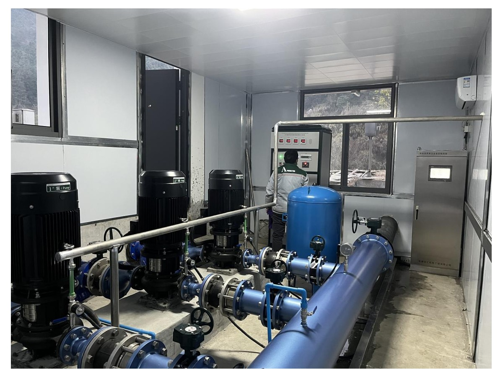
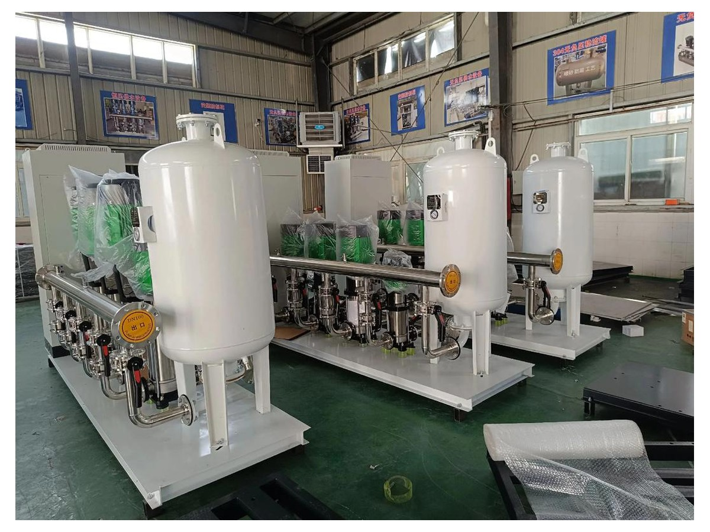
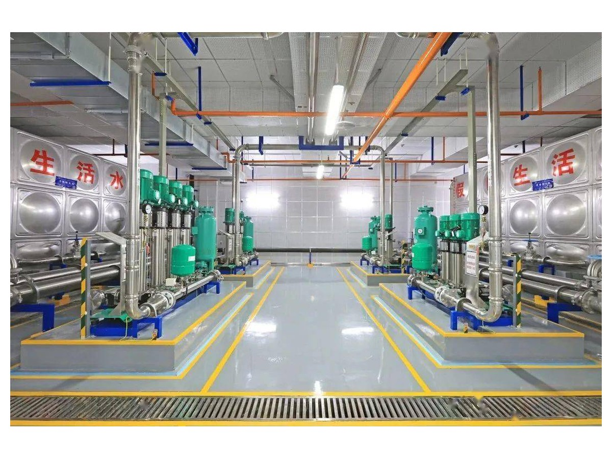
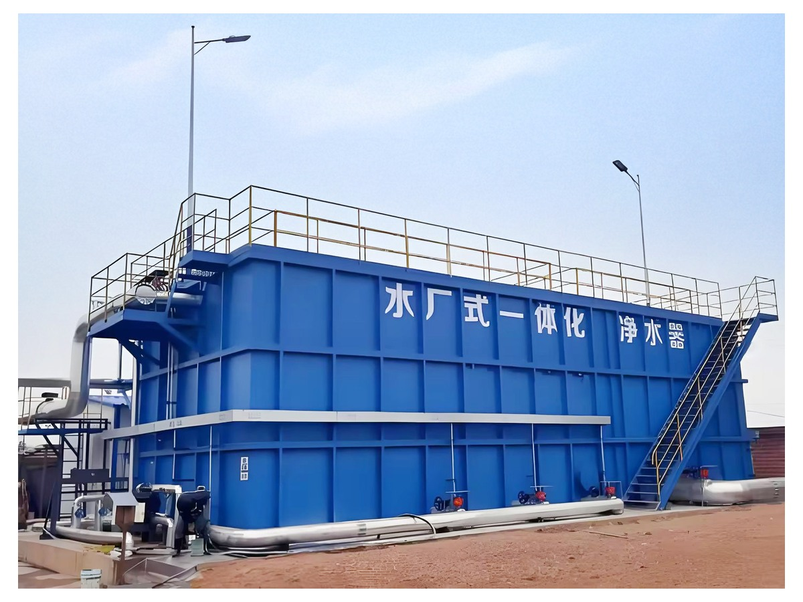
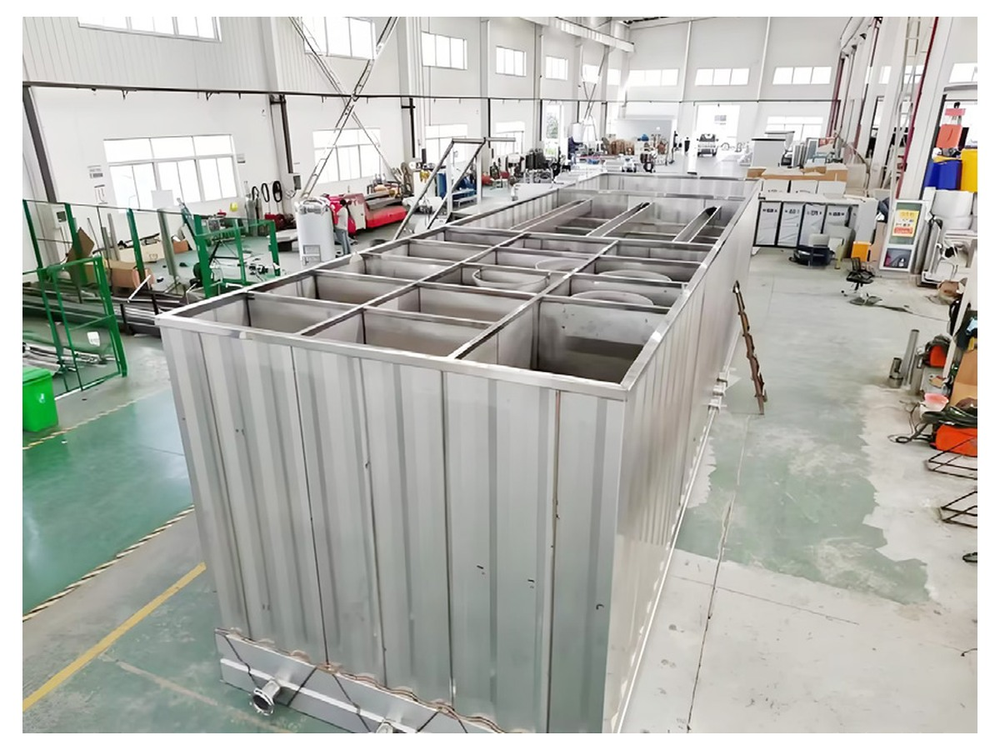

GUWEIENVIRONMENTAL
GUWEIENVIRONMENTALApplications
Water supply and purification for buildings, hotels and venues, with equipment selected for each project's conditions.
Water supply pumps, stainless steel tanks and purification equipment for different flow, pressure and water use requirements.
Pumps and stainless steel tanks work together to regulate water supply. Purification equipment is selected for raw water quality and intended use.

Water supply and purification for buildings, hotels and venues, with equipment selected for each project's conditions.
待确认: Supply scope, drawing coordination, installation, commissioning and after-sales services.
Review the configuration against operating conditions. Unspecified parameters remain 待确认.
待确认: Design flow, head, pump quantity and power.
待确认: Effective volume, material grade and overall dimensions.
待确认: Raw water quality, treatment flow, target water quality and disinfection method.
Water supply pumps focus on pressure and flow. Purification also requires raw water quality, treatment targets and disinfection requirements.
Please provide raw water test results and the intended use to determine purification, disinfection and post-treatment.
Images grouped by equipment structure and site layout. Select an image to enlarge.







Share the project type, capacity and contact details so we can discuss your technical requirements.
Online enquiries are not currently available. Please contact us by phone. 18026396076